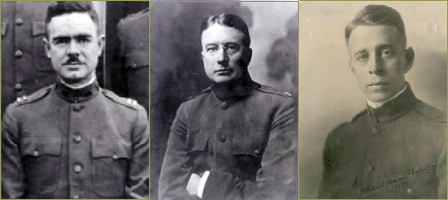

1899–1918 Early Academic Programs and Teaching Hospitals
War and the Affiliated Colleges
After months of "Preparedness," on April 4, 1917, President Wilson asked for a declaration of war on Germany. The School of Medicine was quick to respond, and within days of the declaration the faculty submitted a proposal for the school to participate in the national defense. They envisioned the organization of a Red Cross unit as a mobile base hospital with fourth-year medical students assigned to it for instruction, and began drilling as early as June of 1917. Recent graduates in the classes of 1915 and 1916 were urged to join the Army, Navy, or Reserves. Dentistry, Medical, and Nursing faculty, as part of Base Hospital Thirty, were eventually sent to south-central France to care for the wounded. There they treated hundreds of wounds and gas injuries, and witnessed the beginning of the influenza pandemic among the troops. In all, 35 officers, 765 nurses, and 150 enlisted men served in the Thirtieth. In early 1917, the College of Pharmacy recorded the call of several pharmacy students “to the colors”, and Chemistry instructor James N. Patterson was drafted into the army. Major F. Dowdall, a veteran of the Spanish American War was recruited to the pharmacy college faculty as instructor in first aid and military hygiene. Eventually an estimated 38,000 physicians served in the military, along with 5600 dentists and approximately 16,000 trained nurses.
The armistice of November 11, 1918 came just as the nation was in the midst of the great Spanish Influenza epidemic of 1918. The epidemic struck San Francisco in September and health officials, drawing upon their experience after the earthquake and fire, organized the city into health districts, recruited drivers and volunteers and set up emergency hospitals in advance of the epidemic. Citizens were told to “wear a mask and save your life!” Nurses were in high demand, and the UC training school cancelled classes and placed everyone on twelve-hour duty, sending nurses to other locations as needed. The epidemic peaked again in late December and in all, an estimated one in eleven persons contracted the disease in the city of San Francisco; at least 3500 died, and the disease was most fatal for people between twenty and forty years old. The national death toll was estimated at 500,000 to 700,000, more than ten times the combat death toll of 50,000 for American servicemen. In May of 1919 members Base Hospital 30 returned to the Presidio, were demobilized and came back to the Affiliated colleges. They had missed the flu epidemic in their home city, but had witnessed its ferocity among troops and medical personnel in France. With the strain of wartime and the epidemic emergency over, the affiliated colleges settled into a new decade, moving into an expansive future as a collection of professional schools, that would eventually constitute a modern medical center.

Herbert C. Moffitt, Howard C. Naffziger
>> 1919–1939: The Formation of Schools and the Rise of Clinical Science Instruction